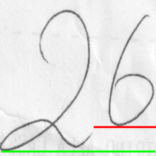
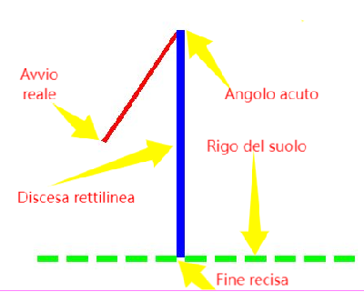
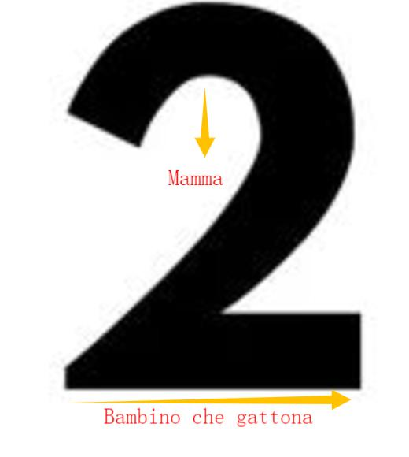
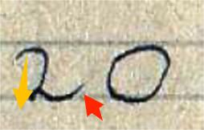
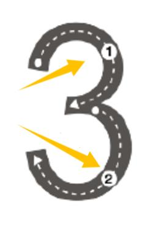
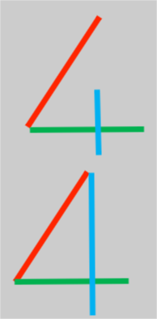

Il racconto dei numeri (I parte)
==
I numeri sono lettere non alfabetiche (appartengono all’ideografico). Per quanto risulta, sono trascurati dalla grafologia mondiale. Sono sperimentati e studiati solo dalla mia associazione (l’AIDAS - DGS – che è autonoma dalla grafologia, sebbene intrattenga con la stessa rapporti interdisciplinari).
Seppur non ci sia stato modo di testarli nella maniera approfondita della quale si necessiterebbe, ciò che si è compreso è comunque di forte interesse ed in questo articolo se ne darà una breve sintesi.
Descriverò il racconto di ogni numero (il significato) e la loro corretta iconografia. Infatti, ogni iconografia appresa sui banchi di scuola è formativa e, all’opposto, tutto ciò che si distanzia in maniera marcata dalla corretta iconografia di un modello è disarmonico. Di conseguenza, la correzione o l’auto correzione dell’iconografia di una lettera di qualsiasi tipo palesemente scorretta è educazione e prevenzione.
Prima di procedere, In primo luogo va tenuto presente che generalmente quando scriviamo una lettera descriviamo il significato della stessa con gli occhi di quando eravamo bambini. Nei numeri, infatti, sono coinvolte le azioni eseguite sul e per il fanciullo che fu lo scrivente dalle figure di mamma e papà, nel modo che poi si preciserà.
Criteri di ordine generale
In una stringa numerica, ogni numero dovrebbe essere omogeneo con gli altri in tutte le categorie generale: allineamento sul rigo, altezze letterale, orientamento verticale, distanziamento non eccessivo.

Ad esempio, nel numero 26 riprodotto il mancato allineamento, in molto vistoso, indica che mamma (il “2”, come poi si vedrà) e papà (il “6”) sono su due piani di realtà diversi, ossia sono separati. Il “6”, inoltre, è eseguito con un’altezza minore in quanto la scrivente è adirata con lui, perché si avvertì abbandonata da lui.I collegamenti tra i numeri sono negativi, in quanto, il più delle volte, indicano che il bambino che fu lo scrivente soffrì per il disaccordo e/o per le liti tra:
1) Papà e nonno, quando sono coinvolti gli “1”;
2) Mamma e papà, nella stringa 10;
3) Tra mamma e nonna, nella relazione “00”, come per esempio nella stringa “100”.
Indirettamente, nella stessa tipologia del collegamento improprio è coinvolta anche una iconografia del “4”, proposta dalla didattica, come si vedrà.
Il paradigma
Con questa espressione ci si riferisce al punto di vista con il quale si osservano e si studiano le lettere delle varie famiglie del leggere - scrivere (principalmente, corsivo, stampatello, numero).
Il corsivo parla (consiglia) alla persona, secondo la sua età e il suo genere, lo stampatello ordina al cittadino e, il numero, infine ordina ai generi, ai fini di genere e proteggere la vita.
Nel numero, è coinvolto soprattutto il genere femminile, in quanto quello maschile interessa principalmente i numeri “1” e “6”, mentre solo nel “4” sono coinvolti entrambe le figure genitoriali Va anche anticipato che ogni famiglia si suddivide in specie maggiore (le maiuscole) e specie minore (le minuscole).
Questa suddivisione interessa anche i numeri. Infatti, l’uno e lo zero sono assimilabili alla specie maggiore, in quanto generano la vita, mentre gli altri sono assimilabili alla specie minore, perché si limitano ad assisterla, seppur nella fase della gestazione (vale per il “3”).
==
L’iconografia e il racconto dei numeri
Di entrambi i termini, per brevità, si riferiranno solamente le indicazioni principali. Per quanto riguarda le descrizioni iconografiche, invece, si tenga presente che la grafica simbolizzata formalizza i nomi dei vari costitutivi secondo la loro funzione simbolica: a titolo di esempio, ciò che altri chiamano rigo di base, per la grafica simbolizzata è il rigo del cammino.
Numero 0
Sul piano iconografico è un’ellisse, che si avvia da ore dodici (ossia dall’alto) e che ha un carattere chiuso (il perimetro non dovrebbe avere “buchi”). Si distingue dalla “O” per il fatto che dovrebbe essere lievemente sproporzionato nell’altezza rispetto all’ampiezza (pressappoco come nei caratteri di stampa, per intenderci). E’ assimilabile, insieme al numero “1”, ad un membro della specie maggiore. Considerato in se stesso esprime il vuoto, bisognoso di colmarsi. In combinazione con il numero “1” si colma, in altre parole può essere assimilato alla madre terra, in attesa di essere fecondata. Nella relazione manoscritta “10” lo zero esprime la parte femminile, è l’ente che genera la vita. Nello “0” manoscritto esprime ance il modo in cui il cucciolo che fu lo scrivente si avvertì desiderato da mamma.
Numero 1

Sul piano iconografico è assai più complesso di quello che si creda. Innanzitutto, l’avvio dovrebbe avvenire pressappoco nel punto indicato in figura e la salita (in figura vedi il tratto diagonale rosso) dovrebbe avere un andamento diagonale sicuro, privo di deviazioni. La discesa dovrebbe essere rettilinea e decisa. L’assenza della salita, ma anche una salita che si avvia dal rigo del suolo oppure, peggio, una salita che si avvia dal di sotto tale rigo indica l’assenza di papà nella fase in cui il bambino che fu lo scrivente. In assenza di correttivi, ne può derivare un indebolimento della forza assertiva.Sul piano simbolico che tiene conto del paradigma detto, il numero “1” è l’ente incide la “madre terra” (il rigo del suolo), per fecondarla (il tema sarà ripreso nel “4”).
Nella parte terminale della discesa, giacché deve poggiare sul rigo del suolo, gli scriventi simbolizzano anche problematiche di ordine sanitarie attinenti alla funzione del cammino, vissute in epoche della vita. Eventuali deviazioni nel tratto della discesa, infine, possono simbolizzare malesseri subiti nella zona della colonna, anche di tipo non invalidante.
Numero due

La descrizione dell’iconografia di questo numero è alquanto dispendiosa, possiamo dire che tutto ciò che si distanzia dall’esempio proposto è negativo.Esprime una funzione più propria del genere femminile: si deve costantemente proteggere, con un manto che ripara e protegge, il cammino del proprio cucciolo.
Insomma, il numero concorre a fare acquisire la sensazione inconscia di essere al sicuro e protetti, anche quando si è soli. Da segnalare che la stessa funzione la svolge il puntino della “i”.

Un esempio manoscritto negativo è rappresentato dal numero “20” qui documentato, che è stato vergato da un bambino di nove anni, morto suicida pochi giorni dopo, nel 1944 (il suo papà era deceduto in guerra). Tra le varie disarmonie, nel “2” si osservi l’”occhio di mamma” (freccia galla) che non è in asse con il bambino (peraltro quest’ultimo aveva due fratelli più piccoli). Nello “0” spicca la mollezza e la non simmetria: il bambino non si avvertiva accolto, protetto, amato e coccolato.Numero 3

Il numero è composto da due pance, come in figura. E’ importante che siano abbastanza gonfie e della stessa dimensione. E’ simile alla B dello stampatello maiuscolo: si è compreso che, nella simbolizzazione, il “3” è mamma e che la “B”, invece, è nonna.Nel tre le due pance svolgono la funzione simbolica dell’inglobare il cucciolo che fu lo scrivente rispettivamente nel sentimento di mamma, nella parte superiore, e nel ventre della stessa, nella parte inferiore.
Nella manoscrittura, il segno è negativo quando la pancia superiore è angolosa (il cucciolo che fu lo scrivente non si è avvertito amato).
Numero 4
Per questo numero, la didattica contempla due iconografie, ma la seconda non è desiderabile, come si vedrà. Entrambe sono composte da una discesa diagonale (indicata con il rosso), una linea orizzontale (indicata con il verde) ed un taglio che affonda in tale linea (linea blu).

La prima iconografia, soprattutto, può essere immaginata come un aratro, che incide la terra, con il fine di fare sbocciare da quest’’ultima un fiore. Di conseguenza, i tre segmenti rappresentano papà (rosso), mamma (verde) e il cucciolo che da loro nascerà (blu). Sono coinvolte tre figure simboliche distinte e che è bene che restino distinte. Benché sia coinvolto il generare, il numero appartiene alle specie minore, in quanto è coinvolta anche la funzione del cucciolo che nascerà da mamma e papà, il quale avrà l’onere di seguire il loro esempio, secondo la funzione che appartiene al proprio genere.In altre parole, il quattro può essere anche indicato come il segno nel quale mamma e papà fanno insorgere nel loro cucciolo il seme del bisogno di aspirare alla genitorialità.
Quando il tratto blu, invece, è posto alla fine del tratto verde, allora lo scrivente quando era bambino non desiderava avere fratelli più piccoli.
Nella seconda iconografia, invece, il tratto blu congiunge gli altri due, il che implica che il cucciolo che nascerà è investito dalla responsabilità di tenere uniti papà e mamma. Infatti, il “4”, del secondo esempio, detto anche a bandiera, lo si rinviene in scriventi che hanno temuto che papà e mamma si lasciassero, per conseguenza dei loro litigi. Da considerare che l’esperienza dimostra che oltre al timore dell’abbandono, i bambini interessati tendono a percepirsi responsabile dei litigi dei propri genitori.
In ultimo, va considerato che dal punto di vista ideografico il “4” può suggerire una persona seduta su una seggiola, vale a dire che nella lettera manoscritta possono essere simbolizzati eventuali malesseri tipo ernia al disco e similari, subiti nel corso della propria vita.
==
Guido Angeloni